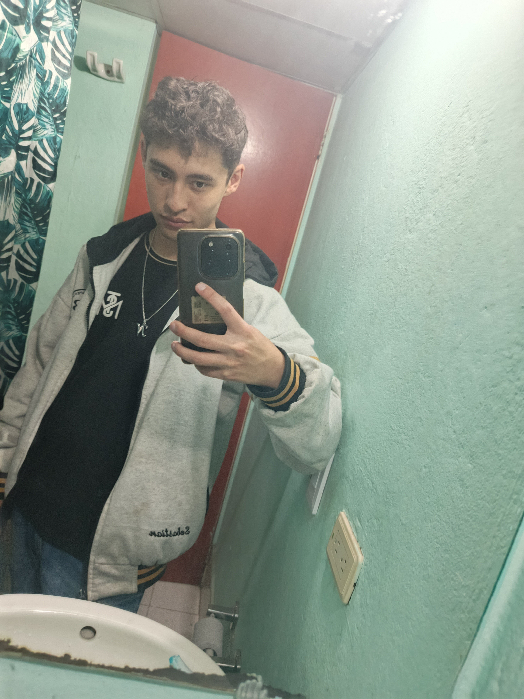
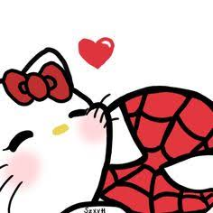
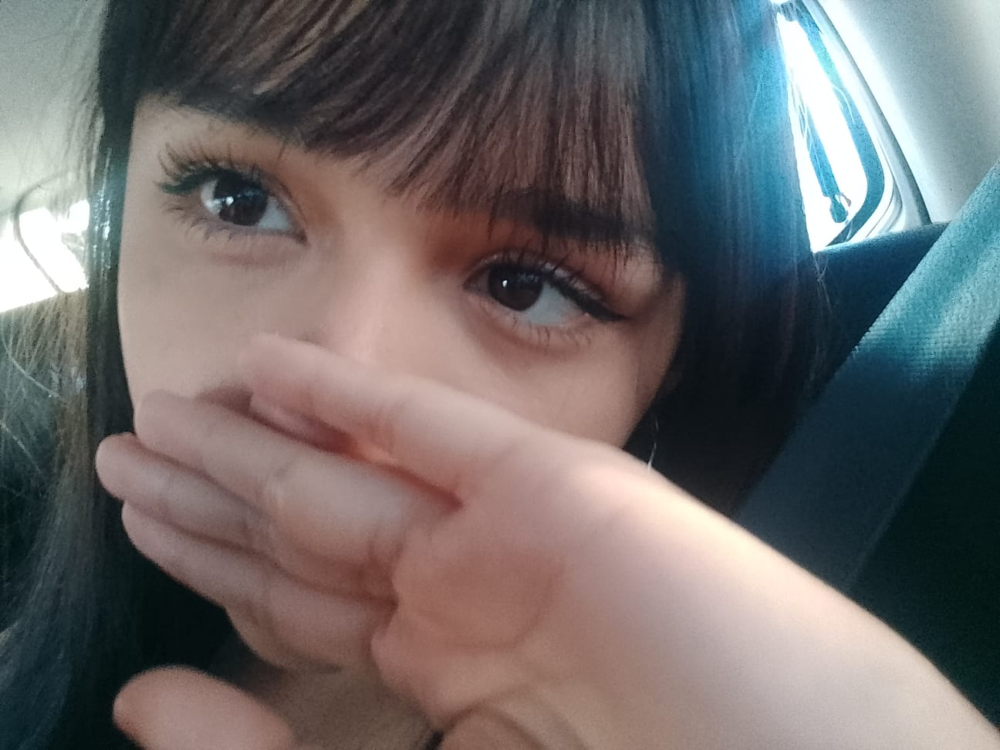

Un pequeño lugar creado para guardar nuestra historia, nuestros recuerdos y todo lo que hemos vivido juntos.
28 de septiembre 💗
No pudo separarnos
Inolvidables
Siempre
Cada momento importa.
Empezamos conociéndonos en Roblox. Yo estaba en una supuesta boda,
y tu curiosidad en el chat te llevó a mí.
Ese fue nuestro inicio.
Empezamos a seguir hablando, a conocernos y después,
con el paso del tiempo, nos hicimos amigos y mejores amigos.
Sentíamos que cada vez nos conocíamos más y que nuestra amistad
era irrompible.
Después de mucho tiempo llegué a la etapa del sufrimiento.
Solo encontraba oscuridad a donde yo veía.
Tú estabas ahí, preocupada por mí.
Me ayudaste, me sacaste de eso y, en esos momentos en los que
me ayudaste, me enamoré.
Verte hacer tanto por mí, dar tu parte para ayudarme,
significó muchísimo.
Hasta el punto de dejar de verte solamente como mi mejor amiga
y empezar a verte como algo más.
Intenté hacer cosas para enamorarte y confesarte lo que sentía.
Tú dudabas, pero llegó el día en el que te enamoraste.
Sin embargo, ambos teníamos miedo.
Miedo de que esto doliera por la distancia.
Decidimos esperarnos, pero sin ser nada todavía.
Los días pasaban y nuestro amor crecía.
Nuestro corazón ya quería decir "te amo" y no solamente
un "te quiero".
Y llegó el día.
Esa llamada.
Esa simple llamada que cambió todo.
"Nayeli, ¿quieres ser mi novia?"
Y cuando dijiste:
"Sí, quiero",
este niño por fin fue feliz.
Este niño volvió a salir y volvió a soñar,
pero esta vez solo contigo.
Los días pasaban y nuestro amor seguía creciendo.
Ya no estábamos solos.
Sabíamos que teníamos a alguien,
y eso nos llevó hasta aquí:
Al primer año de muchos. 💗
Me acuerdo de la primera vez que jugamos siendo novios.
Si no estoy mal, era un parkour en Roblox.
En ese momento se sentía tan bonito poder decirme:
"Al fin podré ponerle en el chat 'vamos amor'
o un 'te amo'".
Y en ese mismo obby, que era uno en el que tú estabas
en un carrito como de mina y yo te llevaba,
vivimos nuestros primeros momentos como pareja.
Nos reíamos porque te me ibas a lo lejos,
nos caíamos y terminábamos haciendo cualquier cosa. 😂
Pero esa fue la primera etapa de nuestra relación.
El comienzo de nosotros siendo oficialmente
tú y yo. 💗
Un recuerdo que se podría quedar para siempre sería el momento
en el que tú me querías dejar porque los problemas se acumulaban
y la presión de la distancia te dolía.
Esos momentos en los que te sentías más que sola.
Pero yo estaba ahí, dándote soluciones y haciéndote entender
que aunque todo estuviera difícil,
nosotros podíamos seguir luchando por este amor.
De todo lo que te dije, me diste a entender que te sentiste
más que amada y con ganas de seguir y no dejarme.
Es uno de esos momentos en los que entenderás que
yo siempre me quedaré en las buenas y en las malas. 💗
Y a pesar de todo, esa llama de nuestros corazones
es la que sigue avivando este amor.
Pueden pasar millones de problemas,
pero ya sabemos afrontarlos juntos como pareja.
Ya sabemos cómo hacer todo esto posible
y cómo hacer que nuestro amor siga creciendo
con el paso del tiempo.
Esto ya no es un pasatiempo.
Esto va para toda una eternidad.
Siempre serás mi princesa
y yo seré tu caballero,
que dará todo en nombre del amor.
Serás mi futura esposa
y yo seré tu futuro esposo,
hasta la eternidad. 💗
Tres imágenes, millones de sentimientos.



En este año pasamos momentos,
algunos malos, pero sobre todo nuestro amor siguió adelante,
enfrentando cada problema juntos.
Nos hemos reído, la hemos pasado bien
y, sobre todo, hemos mantenido esas ganas de seguir luchando
por el otro y seguir adelante.
Vamos por más años inolvidables.
Vamos por ese futuro tan anhelado y lleno de amor,
para seguir cumpliendo nuestros sueños y metas.
La distancia podrá separarnos,
pero nunca ha conseguido separar nuestros corazones.
aunque existieran kilómetros
entre nosotros, la realidad es que tu y yo
siempre vamos a seguir